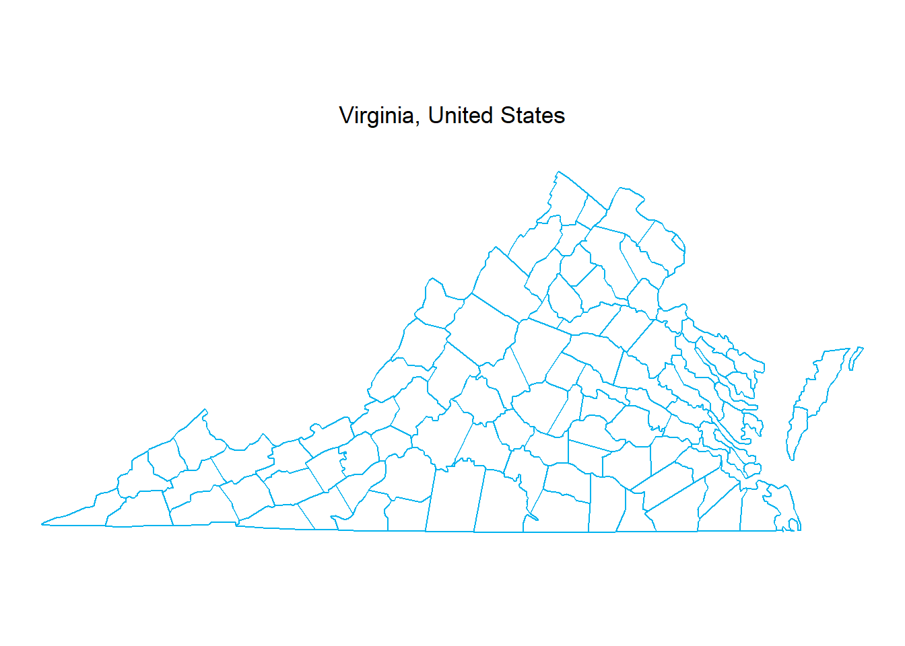
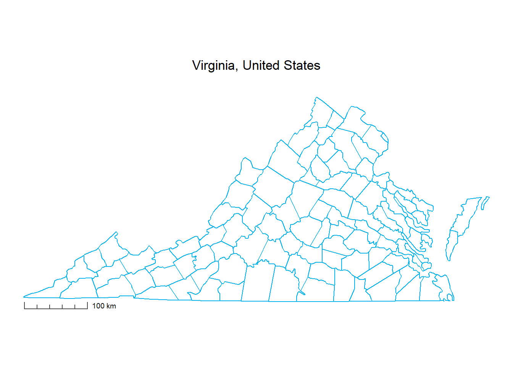
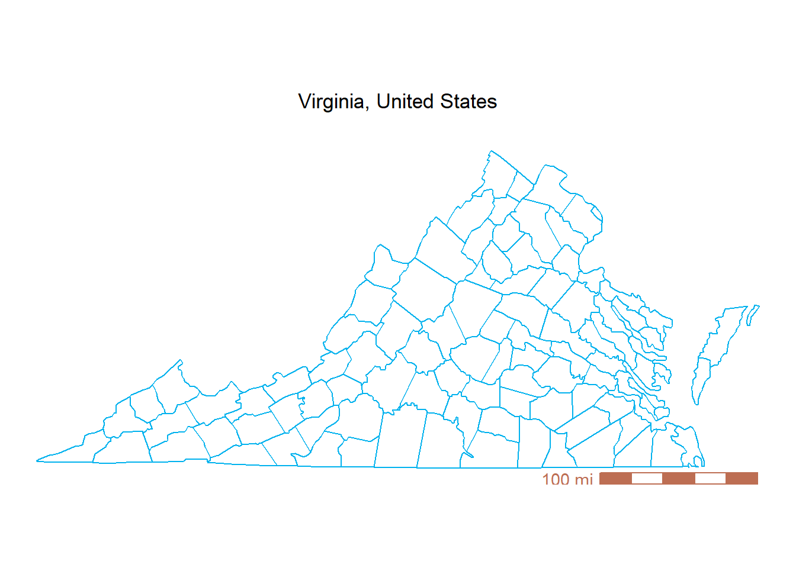
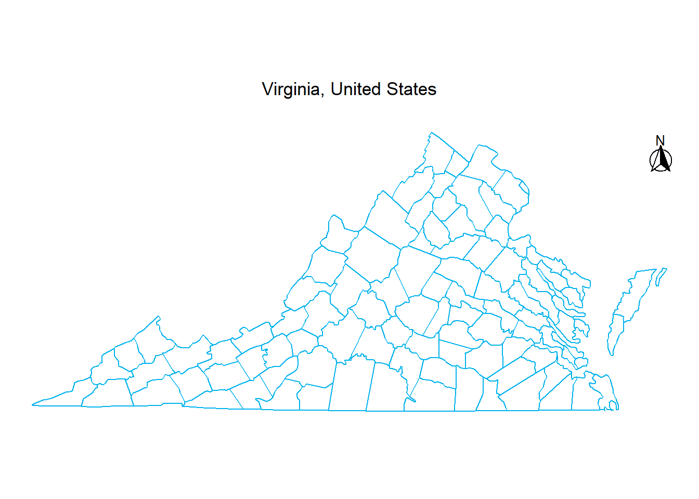
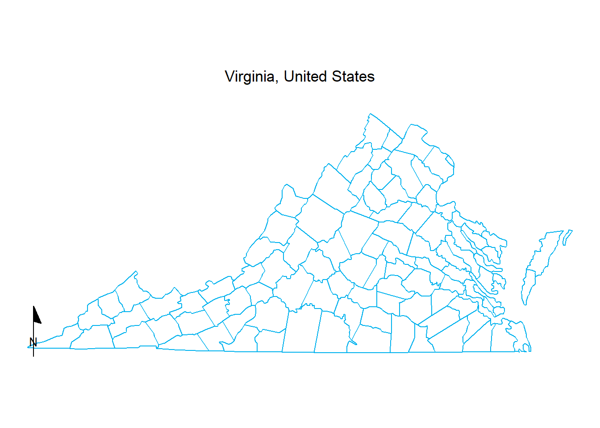
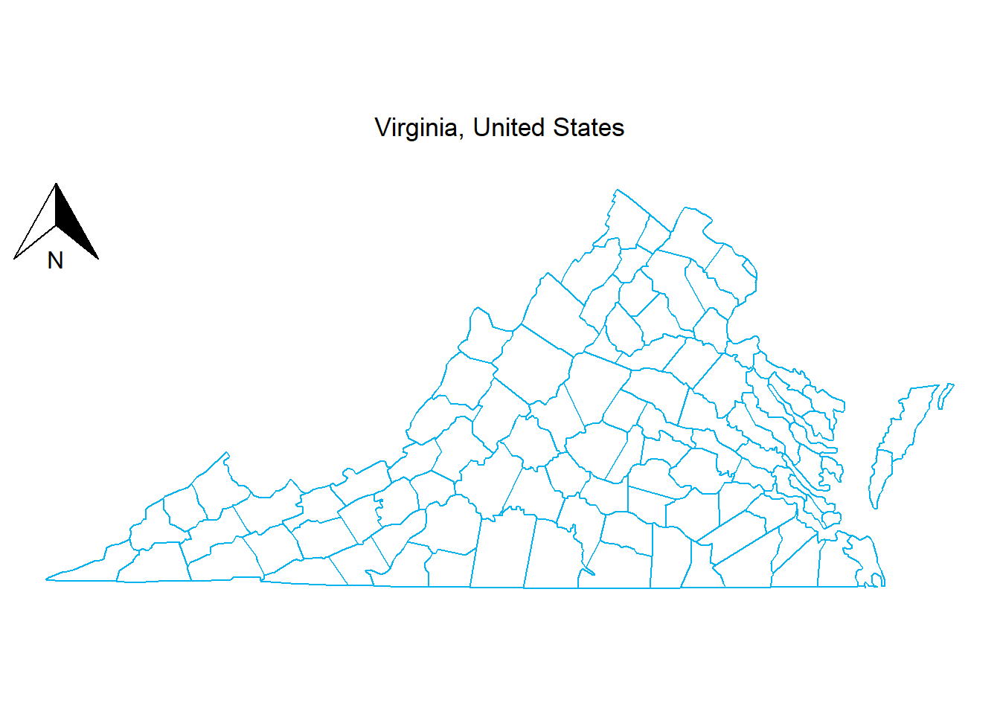
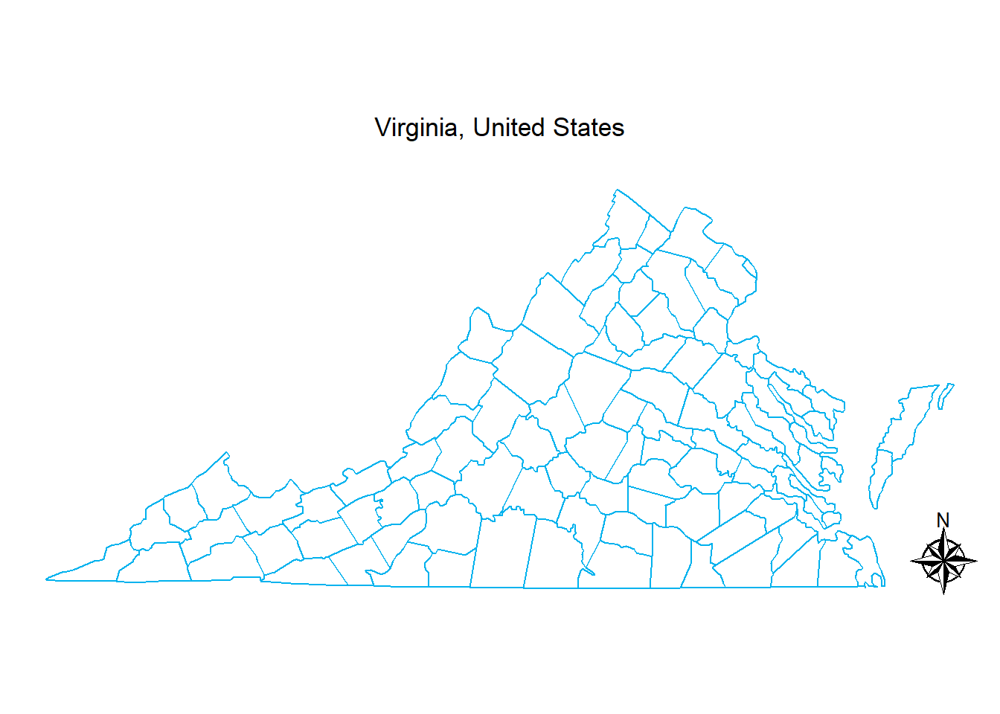

library(ggplot2)
library(ggspatial)Adding a scale bar and north arrow to ggplot2 maps
tips
R
map
Using ggspatial package
One of the easiest way to add standard spatial reference elements, like a scale bar and a north arrow, into a map in R is with the ggspatial package.
Here is a quick example mapping the Commonwealth of Virginia, US.
Step 1: Load the required packages
Step 2: Plot the Commonwealth of Virginia, US
map <- ggplot() +
geom_sf() +
# sets geographic coordinates (Lat/Long in degrees)
coord_sf(crs = 4326) +
borders("county", regions = "Virginia", colour = "deepskyblue2") +
labs(title = "Virginia, United States\n") +
theme_void() +
theme(plot.title = element_text(hjust = 0.5))
map
Step 3: Add a scale bar
We can add a scale bar using annotation_scale() function from ggspatial package.
Here are a few key arguments for customizing the scale bar:
location: where to place the scale bar (“bl” for bottom-left, “tr” for top-right, “tl” for top-left, or “br” for bottom-right).style: visual style of the bar, such as “ticks” or “bar”.unit_category: specify measurement units using “metric” or “imperial”.
Run ?ggspatial::annotation_scale in the R console for full parameter details.
# --- Option 1: Metric scale bar (bottom-left) ---
map +
ggspatial::annotation_scale(
location = "bl", # position: bottom-left
width_hint = 0.2, # proportion of the plot area the scalebar should occupy (20%)
unit_category = "metric", # units: "metric" (km/m)
style = "ticks", # visual style: "ticks"
pad_x = unit(0.85, "cm"), # horizontal padding from the map border
pad_y = unit(0.1, "cm"), # vertical padding from the map border
line_col = "grey30", # color of the scale line and tick marks
text_cex = 0.6 # text size
)
# --- Option 2: Imperial scale bar (bottom-right) ---
map +
ggspatial::annotation_scale(
location = "br", # position: bottom-right
width_hint = 0.3, # proportion of the plot area the scalebar should occupy (30%)
unit_category = "imperial",# units: "imperial" (mi/ft)
style = "bar", # visual style: solid "bar"
pad_x = unit(0.85, "cm"), # horizontal padding from the map border
pad_y = unit(0, "cm"), # vertical padding from the map border
bar_cols = c("#BD6E53", "white"), # bar color
line_col = "#BD6E53", # line color
text_col = "#BD6E53", # text color
text_cex = 0.9 # text size
)
Step 4: Add a north arrow
A scale bar tells the readers how far, but a north arrow tells them which way. We can easily add one using ggspatial::annotation_north_arrow().
Here are the main arguments to customize the north arrow:
location: where to place the arrow (“bl” for bottom-left, “tr” for top-right, “tl” for top-left, or “br” for bottom-right).which_north: sets grid north (“grid”) vs. true geographic north (“true”)style: chooses the visual design of the arrow. Options include:- north_arrow_fancy_orienteering (a classic, detailed compass rose)
- north_arrow_orienteering (a clean, standard compass needle)
- north_arrow_minimal (a simple, sleek “N” with an arrow)
- north_arrow_nautical (a classic nautical compass rose with multi-directional points)
Run ?ggspatial::annotation_north_arrow in the R console to explore additional styling features like colors and text parameters.
# --- Option 1: Fancy orienteering (top-right) ---
map +
ggspatial::annotation_north_arrow(
location = "tr", # position: top-right
which_north = "true", # align to true geographic north
height = unit(0.95, "cm"), # height of the symbol
width = unit(0.95, "cm"), # width of the symbol
pad_x = unit(0.5, "cm"), # horizontal spacing from right border
pad_y = unit(0.5, "cm"), # vertical spacing from top border
style = ggspatial::north_arrow_fancy_orienteering # detailed compass rose
)
# --- Option 2: Minimal style (bottom-left) ---
map +
ggspatial::annotation_north_arrow(
location = "bl", # position: bottom-left
which_north = "grid", # north arrow always pointing up
style = north_arrow_minimal # simple, sleek "N" with an arrow
)
# --- Option 3: Standard orienteering (top-left) ---
map +
ggspatial::annotation_north_arrow(
location = "tl", # position: top-left
style = north_arrow_orienteering # standard compass needle
)
# --- Option 4: Nautical compass (bottom-right) ---
map +
ggspatial::annotation_north_arrow(
location = "br", # position: bottom-right
style = north_arrow_nautical # classic nautical compass rose
)
Further information
ggspatialpackage